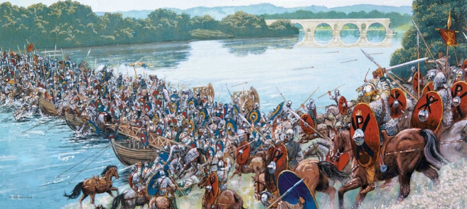
Battle of Milvian Bridge (312AD)
One of the forefathers of the early Church (later known as the Roman Catholic Church) was a man named Eusebius, Bishop of Caesarea. Many Catholics viewed Eusebius as a saint, but he was nothing more than a coward, a liar, and an opportunist.
Christian Martyrs, known as the Arians, were branded as being heretics for refusing to accept the Trinity Doctrine. Unwilling to share the same fate as the Arians, Eusebius went into hiding. Although having been taught the ways of a nontrinitarian, Eusebius later switched sides for fear of losing his life.
Eusebius and another Christian historian, Lactantius, waited until Emperor Constantine died, then concocted fraudulent news that Constantine had been given a divine vision of a Christian symbol--a cross superimposed over the sun by Christ. Eusebius gives two accounts, but fails to mention the vision in the first one. The ruse continued with Constantine, who was said to have been urged by Christ to mark that symbol on the shields of his soldiers prior to winning the Battle of Milvian Bridge in Rome.
Citizens of the Roman Empire commonly worshipped multiple gods, and Constantine, although fascinated by the Christian faith, was sympathetic towards Christians primarily because his father, Constantius, shared the same sympathetic view. If Christ was responsible for aiding Constantine at the Battle of Milvian Bridge against Emperor Maxentius, then the second battle with the emperor usurper, Licinius, would have had the Cross marked on the shields and helmets of Constantine, but the cross wasn’t marked, just like it was absent at the Battle of Milvian Bridge. The Chi-Rho (XP—first two Greek letters of CHRIST’S name) was used! Failure to use the Chi-Rho would have meant a bad omen for Constantine, but not if the supposed vision of Eusebius and Lactantius never actually happened.
Impressed as he was with the rise of Christianity, Constantine continued to be devout in worshipping the same god as his father, namely: Sol Invictus (the Unconquered Sun). Sun worship was popular across the globe well before Christianity became a state religion, and the pagan Sun symbol was a cross, but not the same Cross (idol) that Eusebius and Lactantius saw as a God/worship symbol.
American President Donald Trump coined the phrase: “Fake News.” It was Eusebius who should have been awarded the same biblical term that was given to Satan the Devil: “the Father of the Lie.” Eusebius went as far as making a statement (recorded in his Praeraratio Evangelico) that lying was okay if warranted by any situation. If lying is acceptable in the eyes of God, then swearing an oath to tell the truth in court would never have made its way down through the centuries as it did. To ascertain just how much the Church adopted Eusebius’ fake news, let’s examine the facts…
Constantine medallion (313AD)
Constantine’s gold medallion presents him as a companion to his beloved deity Sol Invictus. It was minted a year after the Battle of Milvian Bridge, and the Emperor makes no mention on it of any divine intervention by Christ. Sol Invictus is shown wearing a halo, which has a plausible connection to that of the solar halo phenomenon known as a Sun dog.
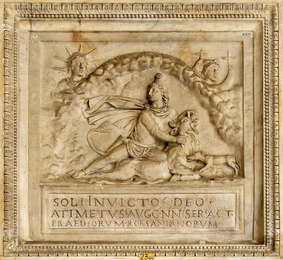
Ancient Roman plaque featuring the gods Sol Invictus, Mithras, and goddess Luna.
This ancient Roman floor mosaic that was uncovered in a mausoleum underneath St. Peter’s Basilica in Rome is thought by many Roman Catholics to be from Christ, but it is more than likely to be that of either Sol Invictus or its Greek counterpart Helios, complete with a halo. The ancient Romans were obsessed with Greek gods, legends, and myths, and another Sun god was icing on the cake for them.
When Constantine marched proudly into Rome with his army, having defeated Maxentius, all records of him ending his triumphal procession by making a sacrifice to one of his other gods, Jupiter, have been omitted from public records. This triumphal procession was possibly brought on by an apparent mood swing, or maybe even a feeling of accomplishment comparable to that of the military skill and tenacity of Julius Caesar. Still, Constantine never once dismissed his claim to victory without including the help of his divine deity, Sol Invictus.
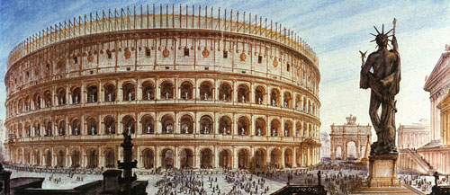
The Colosseum got its name from the huge statue Colossus Solis (Sol Invictus)
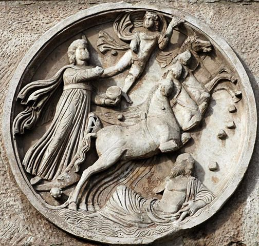
Arch of Constantine praises Sol Invictus
Emperor Nero had the Colossus Solis erected (possibly seeing it as his alter ego). Constantine later added the sunray halo to it—recycling was all the rage with Roman emperors…and the Catholic Church was no exception when it came to that habit. The Arch of Constantine (Via Triumphalis) was built in 315AD as a gift to Constantine from the Senate of Rome. It was constructed in such a way that the Colossus Solis statue became the backdrop as one looks through the arch. Now, where in all of this is the Christian God “officially” mentioned? Apparently nowhere! Of course, the Catholic Church painted a different picture in opposition to actual history. Constantine’s coins continue to bear images of Sol Invictus some 10 years after the Battle of Milvian Bridge, and statuettes of that deity, “Constantine’s divine god”, were carried by standard-bearers in three places on the Arch of Constantine. The word “divinity” is mentioned on the Arch, but this in no way refers to the Christian God who Roman Catholic’s believe it does.
Unlike Lactantius, who converted to Christianity on the day of the Battle of Milvian Bridge and his vision, Constantine converted to Christianity much later, on his death bed in 333AD, when he was baptized by an Arian (heretic-nontrinitarian) bishop. He no doubt wanted forgiveness for executing an innocent man (his beloved son Crispus) and having his second wife boiled to death, and from a Christian standpoint, it is dubious that Constantine was even legally divorced from his first wife. The fact that his baptism was assisted by a religiously divided Arian bishop would have angered both Eusebius and the rookie Christian, Lactantius, who got close enough to Constantine to teach what little he knew of Christianity to the emperor’s son. A Roman Catholic would conclude that if the emperor’s offspring were taught about Christ, then as adults they would be aware of the Cross of Christ and use it anywhere to show support for its religious significance. But if Christ died on a torture stake (“pale”—impaled derives from that word), and not actually on the Catholic Cross, then it is logical that this is why the Cross was never worshipped during Constantine’s lifetime. When Christ died centuries before, the Roman Army never had any “major” interest in cross symbols, and the one representing the Sun was a minor symbol used later. Instead, they were hooked on their adoration for Sol Invictus and Mithras, deities represented in human form.
Hollywood has had a long fascination with Roman period-piece, feature films, or Sandal and Toga Movies as they used to be called. When Ben-Hur was a monster hit on the silver screen, it was only a matter of a short time before “Spartacus” became the next big epic to watch. Action, drama, adventure, love story, and tragedy…it was all there, including a fake ending, which was a shame for all historians everywhere who were forced to swallow that finale of fabrication. Roman Catholic fans of the movie are quick to use it as an example of how quick Christianity spread throughout the Roman Empire. Let me shed some light to that gross exaggeration, as Christianity actually spread through the Roman Empire in super slow-mo!
First, the original title of Ben-Hur was “Ben-Hur: Tale of the Christ.” Kirk Douglas was so eager to play the lead character that after losing it to Charlton Heston, Douglas, still psyched up over the part, diverted his attention to appearing in “Spartacus”, the true story of a slave’s revolt. Spartacus had a slight Christian element added to it (product placement), as was the case in the fictitious story of Ben-Hur. Now, we hop onto the other side of the fence and examine the real circumstances behind Spartacus’ demise.
Spartacus was, by no means, a Christian, as he died 71 years before the birth of Christ. Roman General Crassus, whose soldiers finally defeated Spartacus and his army, was not a Christian, and neither were his men. The two Greek historians, Plutarch and Appian, did not get all of the facts concerning Spartacus because they were not eyewitnesses of his final hours. Appian was viewed by skeptics as being nothing more than a “faithful copyist or excerpter and compiler”, while Plutarch was concerned with his own ideas of fate and destiny than with strict accuracy.
The Greek’s were heavily into fables, myths, legends, and all forms of romanticism (i.e. Achilles, Jason & The Argonauts, The Iliad, The Odyssey, and other classical Greek literature). The truth is, an army of great number today would only surrender if they ran out of ammunition, but 6,000 rebellious slave/gladiators? Really???!!! “They met a death worthy of men, fighting to the death,” as was both aptly and realistically put by the Roman historian Florus. The only thing hanging from cross-shaped stakes would have been Tropaeums (“trophies”—derives from that word), the uniforms of captive officers left at the scene of a battle. This was common with the Roman Army. What meager remnants left of Spartacus and his men would have been beheaded.
Tropaeum being erected by Roman soldiers
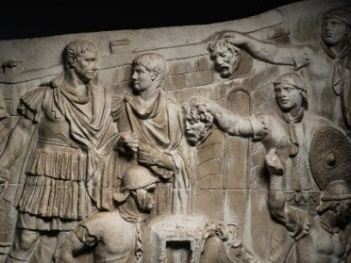
Roman soldiers holding severed heads
Pales/stakes were used to make ancient forts and invasion barriers, and Roman soldiers were adept at converting them from the trees of nearby forests. There was no reason on this planet that Jesus or the two criminals impaled beside him would have been nailed to crosses. None! Now, torture stakes, yes!
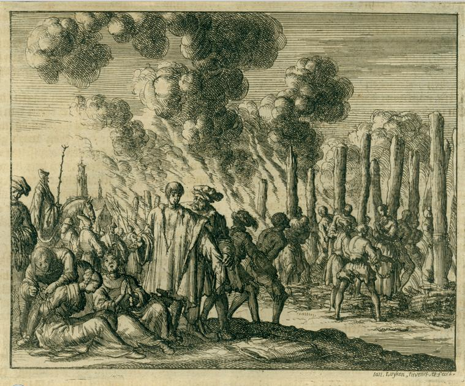
Roman Torture Stake used in the Persecution of Diocletian and Martyrs of Palestine
Christian Torture mural (dated 1629)
In times past, slow torture was meted out in shocking ways. The barbaric, ancient Assyrians used to see how long they could keep their captives alive while they peeled off their skin. The Romans tortured their undesirables by impaling them upon stakes (“stauros” – Original Greek Scriptures), as if stringing them up like an animal to bleed in preparation for a meal. Asphyxiation would take many agonizing hours before the victim’s life-force finally dissipated. Thousands upon thousands of people, even Christians, were executed while being fastened to stakes, not crosses! Being a nontrinitarian was no exception. In any large, ancient Roman city, a marble pillar was used in place of a torture stake on rare occasions.
Constantine wearing a Chi-Rho helmet
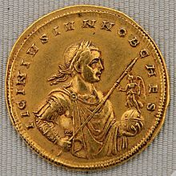
Constantine’s son, Crispus, bearing a Chi-Rho shield
In 324AD, Constantine waged war against his emperor rival and fellow Christian supporter Licinius, where the latter died at the Battle of Chrysopolis. Historian Eusebius stated that both Constantine and his son, Crispus, wore the Chi-Rho symbol, not the so-called Christian Cross, during the Battle. The coins of the emperor and his son attest to that fact. Prior to his demise, Licinius had a gold coin minted with him holding an orb (symbolizing the world) with the Equinoctial Cross markings, complete with the Victory figurine on the top. The Equinox was very popular with the ancient Romans. The famous chariot races inside the enormous 250,000 seating Circus Maximus stadium featured four competing teams representing the four seasons of the Equinox, Green, Red, Blue, and White. The Roman emperors mostly favored the Greens (Spring).
Licinius holding goddess Victoria on an Equinoctial Orb
Before Emperors Constantine and Licinius went to war against each other, they both worked together in making Christianity a legal religious institution (also calling it a “cult”), whereby they unitedly signed the Edict of Milan. It gave the Catholic Church the starting blocks for freedom to worship…that was unless a Christian chose to worship God the way the 12 Apostles did way back, remaining staunch nontrinitarians.
“War of the Worlds” author H.G. Wells remarked in his book: The Shape of Things stated Jesus never once gave evidence that his apostles should submit themselves to any kind of Trinity Doctrine. The Jews only worshipped one God, Yahweh, but even they deviated from true worship, which cost the Jewish Nation dearly on three occasions—invasion from the Babylonians, the Romans, and the first Christian Crusade, leaving their sacred temple of worship reduced to dust.
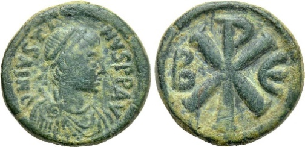
Coin of Iceni queen Boudicca…with Sun cross
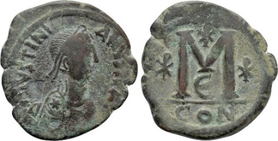
Coin of Constantine/Sun/Sol Invictus/Jupiter
Queen Boudicca of the Iceni Tribe was indeed an enemy of Rome. She and her husband’s warrior army slaughtered many Roman soldiers before they were defeated. The coin on the top/left is evidence that she, like the Celtics, worshipped the Sun. When crops failed due to long periods of bad weather, these tribes would offer up human sacrifices to the Sun, a practice of ultimate unchristian proportions.
Emperor Theodosius I used the Chi-Rho symbol in support of Christianity some 71 years after the Battle of Milvian Bridge. His wife, Aelia, also did for a while, but after fearing that her husband may have had a leaning towards becoming a heretic-nontrinitarian, she switched to believing in Lactantius’ notion (lie) Constantine’s supposed vision was of a Latin Cross. Aelia, obviously a woman used to having her way, urged her husband to cancel his meeting with the Arian priest, Eunomius. She may well have feared that Theodosius might have gotten baptized a Christian by a nontrinitarian… just like Constantine!
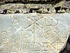
Theodosius’ Chi-Rho coin (378-383AD)
Aelia’s Chi-Rho coin (378-383AD
Aelia’s Chi-Rho shield coin (378-383AD)
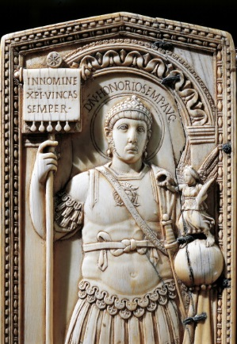
Aelia’s Latin Cross coin (378-383AD)
Emperor Honorius honored Christ by using the Chi-Rho symbol some 111 years after the Battle of Milvian Bridge.
Honorius’ Chi-Rho coin (395-423AD)